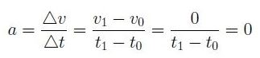

El movimiento rectilíneo uniforme (MRU) es el movimiento que describe un cuerpo o partícula a través de una línea recta a velocidad constante.
Observa que cuando afirmamos que la velocidad es constante estamos afirmando que no cambia ni su valor (también conodido como módulo, rapidez o celeridad) ni la dirección del movimiento.
La posición del cuerpo después de un tiempo se calcula a partir de la posición inicial y de la velocidad del cuerpo.
x = x0+ v·t
Donde:
-v es la velocidad
-x es la posición final
-x0 es la posicion inicial
-t es el tiempo empleado
La velocidad de un cuerpo en un MRU es constante y viene definida como el cociente entre el incremento de espacio y el incremento de tiempo.
v=v0=constante

Donde:
-v es la velocidad final
-x es la posición final
-x0 es la posicion inicial
-t es el tiempo final
-t 0 es el tiempo inicial
En el movimiento rectilíneo uniforme (MRU) la velocidad es constante, por lo que la aceleración es cero.

Donde:
-v1 es la velocidad final
-v0 es la velocidad inicial
-t 1 es el tiempo final
-t 0 es el tiempo inicial
Editado por: Alex Vilcacundo
Enviar sugerencias a mi correo: amvilcacundo@espe.edu.ec